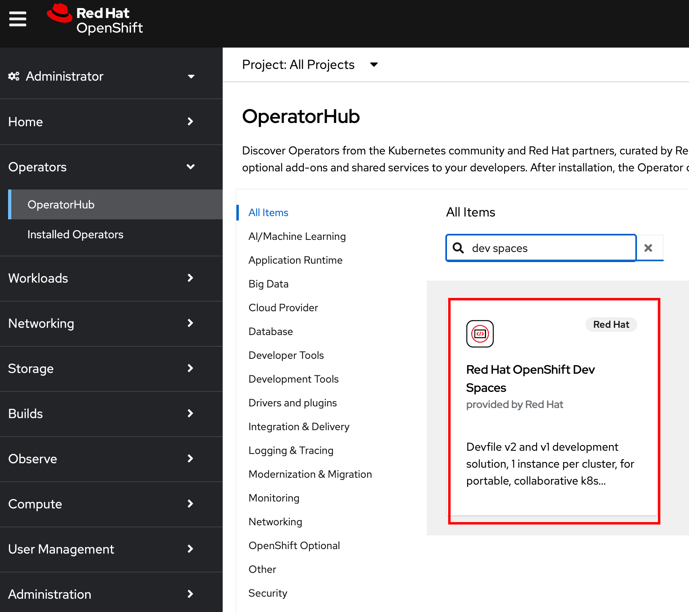
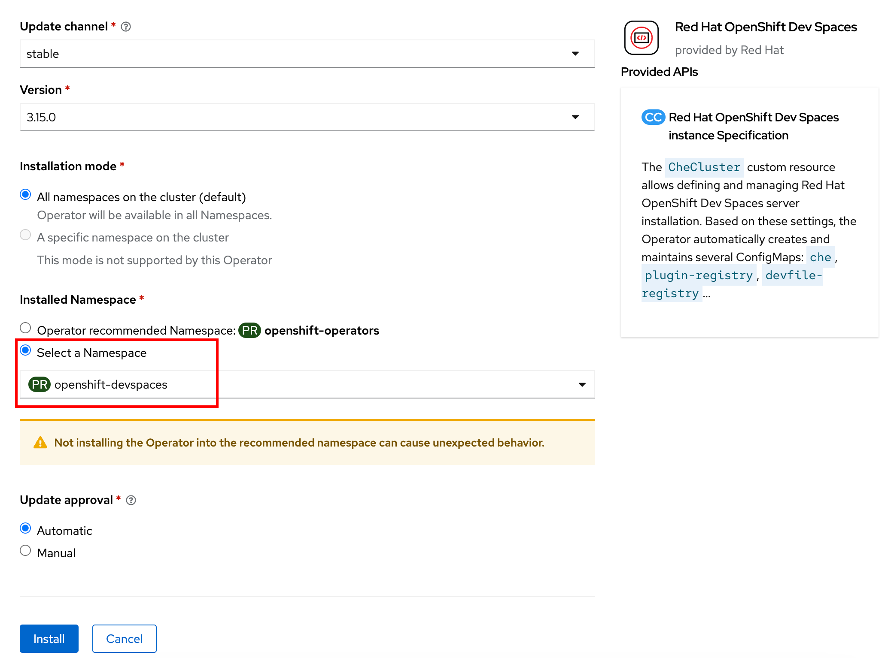
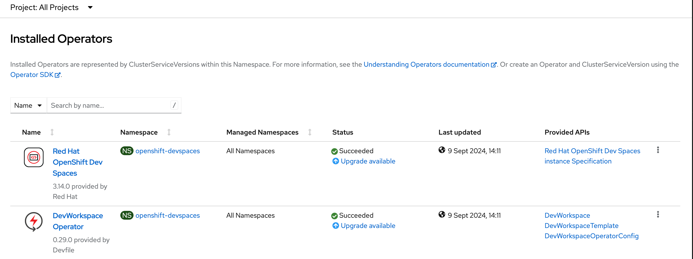
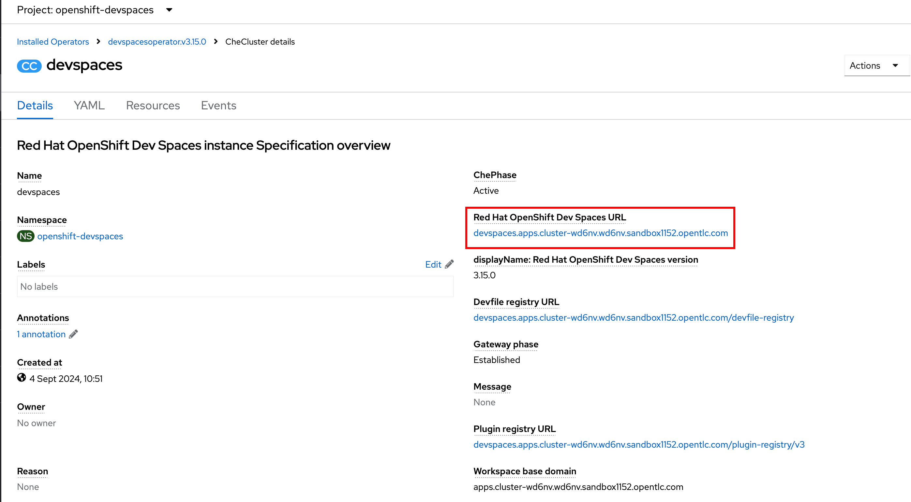
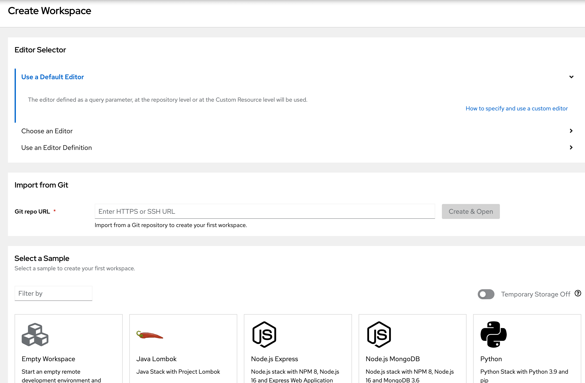

Installation Using the OpenShift Web Console
Red Hat OpenShift Dev Spaces is available as an operator that can be installed using the OpenShift web console (OperatorHub).
Pre-requisites
-
You should have provisioned an OpenShift 4.16+ cluster as outlined in the
Classroom Environmentsection of the course home page. -
Download the OpenShift client
ocfor your platform from the OpenShift web console by clicking the "?" icon on the top right navigation bar. Uncompress the archive file, and then copy theocbinary for your platform to the system path (usually/usr/local/binon UNIX systems). -
Cluster administrator access to OpenShift (both CLI and web console). Verify that you can log in to the OpenShift web console and CLI as a cluster administrator.
Lab: Installing Dev Spaces Using the OpenShift Web Console
-
Log in as the
adminuser with cluster-administrator permissions. Create a new OpenShift project named openshift-devspaces. You will install the Dev Spaces operator and instance into this project.$ oc login -u admin <OpenShift API URL> $ oc create namespace openshift-devspaces
The OpenShift web console will not allow you to create a new namespace/project starting with openshift-. You have to create the namespace using theocCLI. -
Log in to your OpenShift web console as the
adminuser with a password ofopenshift23. -
Click
Operators > OperatorHubin the left side navigation bar of theAdministratorperspective in the OpenShift web console. -
Search for
dev spacesin the search field on this page, and then select theRed Hat OpenShift Dev Spacesoperator.Figure 1. Search for the Dev Spaces Operator -
In the operator details page, select the
stablechannel and the latestVersionof Dev Spaces (3.15 as of Sep 2024), and then clickInstall. -
In the
Install Operatorpage, leave all fields at their default value and only change theInstalled Namespacefield toopenshift-devspaces. ClickInstallto proceed.Figure 2. Change Namespace where Dev Spaces will be installed -
The operator will take a few minutes to install. Once complete, click on
View installed Operators in Namespace openshift-devspaces. You should see two operators -Dev Spacesand its dependencyDevWorkspaceoperator successfully installed.Figure 3. Operator installed successfully -
Click
Red Hat OpenShift Dev Spaces instance Specificationin theProvided APIscolumn to create a new Dev Spaces instance from the installed operator. ClickCreate CheCluster. -
In the
Create CheClusterpage, leave all values at defaults, and clickCreateto create a new Dev Spaces instance. You will accept the default configuration at this point and get a basic Dev Spaces instance up and running. You will progressively configure the instance in subsequent courses in the learning path. -
Wait for a few minutes while the instance is created. Click the
devspacesCheCluster resource and verify that theMessagefield saysNone, indicating that the instance was successfully initialized. -
Click on the
Resourcestab and note the list of Kubernetes resources created. All the resources must have aStatusofCreated. -
Switch back to the
Detailstab. Note the link to the Dev Spaces instance under theRed Hat OpenShift Dev Spaces URLfield.Figure 4. Dev Spaces URL -
Open the Dev Spaces URL link in a new tab.
-
Click
Log in with OpenShift -
Click
htpasswd_provider -
Log in as the
user1user with a password ofopenshift23. -
Click
Allow selected permissionsto allowuser:fullpermissions for this user.
-
-
After you log in, you will see the Dev Spaces
Create Workspacepage. You have successfully installed Dev Spaces.Figure 5. Dev Spaces Home Page